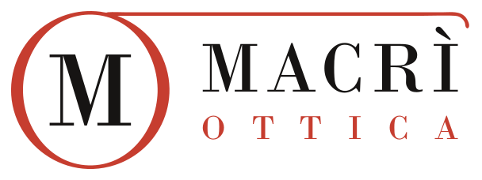
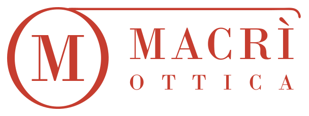
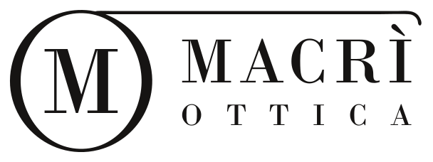

CONCETTO 04Monocolo OMconsigliato

L'idea
Solo geometria e tipografia. La O è una lente con il chiaroscuro del Bodoni (spessa ai lati, sottile sopra e sotto) e contiene la M: «OM». La stanghetta esce dalla lente, fa da filetto sopra la scritta e finisce con la curva dell'orecchio.
Perché funziona
Il segno più «da studio»: elegante, senza tempo, nitido a ogni misura. La lente con la M è un'icona perfetta a 24 px (app, favicon, profilo). Il draghetto può restare come mascotte per vetrina e social.
Caratteri e colori
Bodoni MT (MACRÌ 0,07 em · OTTICA giustificata alla larghezza di MACRÌ)
rosso #C63D2Fnero #161413carta #F4EEE3
Icona: prova a misura vera
 Ottica Macrì
Ottica MacrìPositivo e negativo · 1 e 2 colori


Applicazioni
Insegna in fascia sopra la vetrina, di notte (lettere retroilluminate).
Aldo MacrìOttica MacrìVia Poggi d’Oro 23 · 00179 Roma
06 7834 6705
06 7834 6705
Biglietto da visita 85 × 55 mm: fronte e retro.